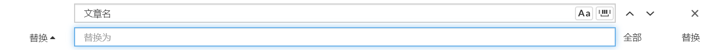

什么是 Hexo？
Hexo 是一个快速、简洁且高效的博客框架。
Hexo 使用 Markdown（或其他渲染引擎）解析文章，在几秒内，即可利用靓丽的主题生成静态网页。
Hexo的几个常用命令
hexo new [layout] <title>：如hexo new post 1与hexo new 1都是在_posts文件夹下创建1.md文件。
hexo new page aboutme：新建一个标题为 aboutme 的页面，默认链接地址为 主页地址/aboutme/。
hexo s：启动本地服务器，用于预览主题。默认地址:http://localhost:4000/。
- hexo s 是 hexo server 的缩写，命令效果一致；
- 预览的同时可以修改文章内容或主题代码，保存后刷新页面即可；
- 对 Hexo 根目录 _config.yml 的修改，需要重启本地服务器后才能预览效果。
hexo g -d：生成静态文件并部署。
hexo g： hexo generate 的缩写，生成网站静态文件到默认设置的 public 文件夹。
hexo clean：清除缓存文件 db.json 和已生成的静态文件 public 。
- 网站显示异常时可以执行这条命令试试。
如何向hexo博客中插入图片
以下三种方式均可插入图片
{% asset_img 1.jpeg %}
<img src="1.jpeg" >
在md文件中插入图片的语法为。
其中方括号是图片描述，圆括号是图片路径。
一般来说有三种图片路径，分别是相对路径，绝对路径和网络路径。
相对路径：相对于当前文件的路径。
网络路径：引用网上的图片，直接复制图片地址，放在圆括号中就完事了。
绝对路径：图片在计算机中的绝对位置，
由于我们的博客是要部署在网站上，部署后会生成新的文件目录，此时图片与博客会在同一目录。
在hexo中使用文章资源文件夹需要在config.yaml文件中更改一下配置：
post_asset_folder: true当该配置被应用后，使用hexo new命令创建新文章时，会生成相同名字的文件夹，也就是文章资源文件夹。
图片插件
插件hexo-renderer-marked解决了这个问题。可以只用npm install hexo-renderer-marked命令直接安装，之后在config.yaml中更改配置如下：
post_asset_folder: true
marked:
prependRoot: true
postAsset: true之后就可以在使用的方式愉快的插入图片了。
我们做了这么多都是为了方便，那么为什么不再方便一点呢。
hexo与Typora的完美结合
上述是从文章资源文件夹中引用图片，前提是先将图片放入到文章资源文件夹，如果图片数量众多的话，一张一张的放很影响效率。但是不用怕，我们有很方便的解决方法。
Typora是我非常喜欢的Markdown文本编辑器，在之前的文章中也介绍过一点。
Typora对于插入图片的支持做得非常好，在文件->偏好设置或者直接<C-,>进入设置。

使用该配置后，可以直接复制网页中的图片地址，粘贴到Typora中后，会直接复制该图片到文章资源文件夹，同时自动更改路径。
如复制网络路径的图片https://...../image.jpg粘贴到Typora中叫文章名的文章后，图片会自动变为。
但我们知道部署后，文件路径是不同的，所以当我们插入完所有的图片后，我们还需要删除每个图片路径中的文件名/。不慌，也很简单。
在Typora编辑器中，使用<C-f>快捷键，将所有的文章名/替换为空即可删除。

然后再将博客上传，图片就会随着文章一起打包。在网页中就可以看到正常显示的图片，大功告成。
小记
source文件夹是存放用户资源的地方。
除_posts文件夹之外，开头命名为 _ (下划线)的文件 / 文件夹和隐藏的文件将会被忽略。
Markdown 和 HTML 文件会被解析并放到public文件夹，而其他文件会被拷贝过去。